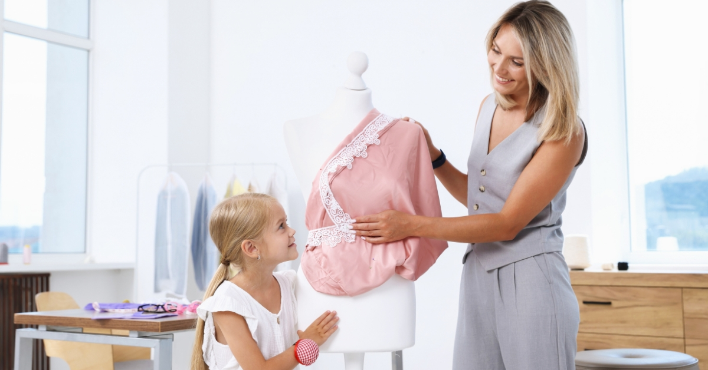

A környezettudatos öltözködés egyik legfontosabb területe vitathatatlanul a gyerekruha. A nagy divatcégek rengeteg energiát fektetnek abba, hogy a legkisebbek is stílusosak legyenek már az első napoktól kezdve. De valójában meddig használ egy baba egy-egy darabot? Tény, hogy ahogy nőnek a gyerekek, a ruhák is nagyobb igénybevételnek vannak kitéve, de ez nem minden esetben jelenti azt, hogy tönkre is mennek. Járjuk körbe, mi jellemzi ma a gyerekruha-piacot!
Bár nem reprezentatív kutatásra alapozom, a tapasztalat azt mutatja, hogy a szülők – és főleg az édesanyák – nagyjából három markáns csoportba sorolhatók a környezetünkben.

Vannak szülők, akiknél fel sem merülhet, hogy a gyerekük olyan holmit viseljen, amit korábban már más hordott. Gyakran érezhető egyfajta távolságtartás vagy idegenkedés a használt ruhákkal szemben. Sokan azt feltételezik, hogy csak az vesz mindig újat, aki anyagilag ezt könnyedén megteheti, de ez tévedés. Számos családban komoly anyagi áldozatok árán is csak a márkás, új darabokat veszik meg. Mi állhat a háttérben? Valószínűleg egyfajta belső kényszer vagy kompenzálás, ami sokszor inkább a külvilágnak szól, mintsem a gyermek tényleges igényeinek.
Én magam is ebbe a kategóriába tartozom. Vannak dolgok, amikből szinte mindig újat választok, ilyenek például a fehérneműk vagy a lábbelik. Bár a cipő kérdése nálam is rugalmas: ha találok egy kifogástalan állapotú, alig használt darabot, az még belefér. Minden más esetben viszont tudatosan keresem a használt ruha kínálatot. A nálunk feleslegessé vált, kinőtt ruhákat pedig továbbadom; vagy elajándékozom őket, vagy jelképes összegért hirdetem meg a megfelelő felületeken.
Ismerek olyan anyukát, aki ezt már-már művészi szintre fejlesztette. Ez a másik véglet, ahol még a teljesen elnyűtt nadrág is kap egy esélyt, mert „menthető”. Bár nagyszerű dolog a fenntarthatóság, fontos látni a határokat is. Nem szabad átesni a ló túloldalára: a gyerek önbizalmának sem tesz jót, ha látványosan szétmosott vagy többszörösen foltozott ruhában kell közösségbe mennie. Meg kell tanulni elengedni azokat a darabokat, amik már kiszolgálták az idejüket.
A gyerekek elképesztő tempóban nőnek, emiatt rengeteg holmi halmozódhat fel a szekrényekben, különösen többgyermekes családoknál. Mivel a legtöbb ruhát nem hordják rongyosra, azok simán kiszolgálhatnak még egy-két további tulajdonost. A babaruhákra ez hatványozottan igaz, hiszen alig használódnak el. Ha nincsenek rajtuk makacs foltok, bátran továbbadhatók. Gyakran előfordul az is, hogy egy-egy darab címkésen marad a szekrényben. Vagy egyszerűen átnőtte a kicsi, vagy egy alkalomra szántuk, ami végül elmaradt. Emiatt pedig jó eséllyel találhatunk újszerű használt babaruhát a webáruházak szortimentjében. Aztán ott van az ovis kor, amikor már határozott véleményük van: „ezt én nem veszem fel”. Ilyenkor a legjobb megoldás, ha új gazdát keresünk a ruhának, aki örülni fog neki.
Lehet, hogy nem tűnnek fontosnak, de ezek valójában rengeteget segítenek abban, hogy csökkentsük a környezeti terhelést és a textilhulladék mennyiségét. A legegyszerűbb, ha a saját készleteinket frissítjük folyamatos továbbadással. Ha pedig eladod a megkímélt darabokat, az értük kapott összeget rögtön befektetheted a gyermeked következő ruhaméretébe.
A legkényelmesebb és legbiztonságosabb forrás. Ingyenes cserebere, ahol pontosan tudod, honnan jön a ruha. Ebből kifolyólag igen népszerű módja a mai napig az ”újabb” darabok beszerzésének.
Sokan kedvelik ezeket a közösségi eseményeket. Lehetőséget adnak az eladásra és a vételre is, de érdemes résen lenni. Tapasztalataim szerint az árak és a minőség nagyon hullámzóak; néha irreálisan sokat kérnek el silány darabokért is, ami sajnos elveheti a kedvét a gyanútlan vásárlóknak.
Ezek általában Budapesten vagy nagyobb városokban elérhetőek. Szigorúbbak a szabályok, jobb a felhozatal és a szervezők igyekeznek kiszűrni a nem megfelelő minőséget árusítókat.
A Marketplace és a tematikus Facebook-csoportok rendkívül népszerűek. Itt érdemes a helyi hirdetéseket figyelni, hogy személyesen is meg tudd nézni a terméket. Eladóként ugyanakkor számolni kell azzal a nehézséggel, hogy a vevőjelöltek sokszor nem jönnek el a megbeszélt időpontra.
Itt nem a magánszemélyek közötti adásvételt értem, hanem a profi hazai vállalkozásokat. Egyre több hazai webshop kínál válogatott, jó állapotú használt gyerekruhákat. Ezek ugyanúgy működnek, mint bármely más webáruház: van fogyasztóvédelem, visszaküldési lehetőség és általában megbízható minőség. A választék is egyre szélesebb, így kényelmes alternatívát jelentenek az offline megoldások mellett.
Olvasd el ezt is: Tiszta ruha: Miért kötelező a mosás az újnál is? — megtudhatod; tiszta-e a bolti ruha, vagy hogyan tisztítsd használt kincseidet.